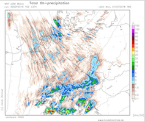

Wetterbesprechung Sachen zur LV Wetterbesprechung Frei zugängliches Lokalmodell WRF modellzentrale.de, Kartenarchiv der letzten 14 Tage  Hypothetische Hebung der Luftmasse für Wien, aktuell und die letzen Wochen GFS Wien Ensemble Animation der letzten Läufe Link zum Raspberry Archiv